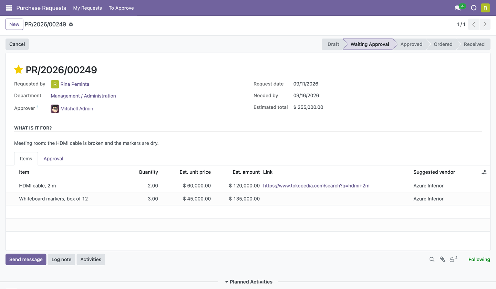
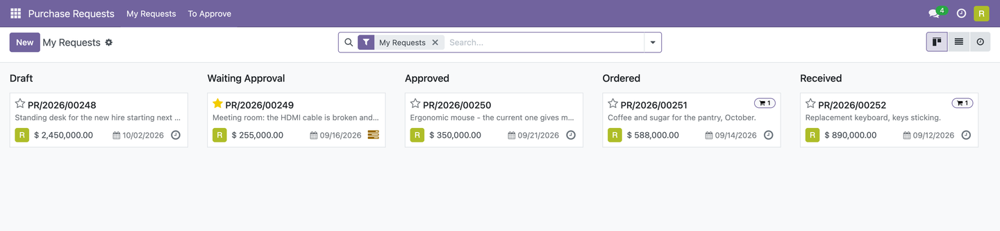
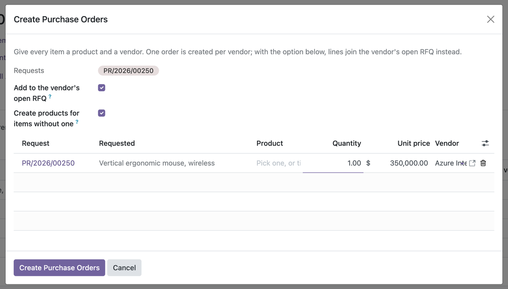
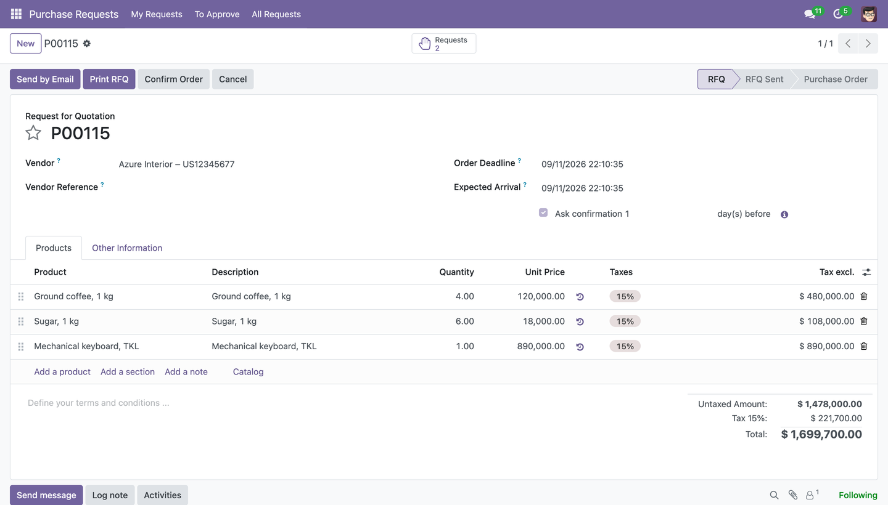

Staff ask in their own words. Managers approve. Purchasing orders in one click.
The person who opens a purchase request most often is not a buyer. They do not know product codes, they have no access to the Purchase app, and what they want to know is simply where is my request now. This module is written from that side of the desk: a request is a plain list of things in the requester's own words, an approval by their own manager, and a state that tells them what happened — all the way to it has arrived.

Items are free text — "HDMI cable, 2 m" — with a quantity, an estimated price and, if there is one, a link to where they saw it. A product is optional; purchasing picks it when ordering. The approver is the requester's own manager, taken from the employee record.
The requesterAn app of its own, My Requests, with no Purchase access needed. Every step lands in their inbox: approved, rejected with the reason, ordered with the order number, the order confirmed with the vendor. The last word is theirs: Received is pressed by the person who asked. |
The managerRequests from their own people, found through Odoo's employee hierarchy — nothing to configure. An activity on submit, one button to approve. Reject asks for a reason; the requester reads it, fixes the request and resubmits. Above an amount you set, a purchase manager validates as well. |
PurchasingApproved requests from everyone, in the Purchase app where they work. Create Purchase Order from one request or many at once: give each item a product and a vendor, and the orders are made — one per vendor, or added to the vendor's open RFQ. |

My Requests, for the requester: each request moves across the columns as it goes from draft to received. A star for urgent, a badge for the orders it became.
|
 |
Words into orders. Give every item a product and a vendor. For the one-off things nobody will buy again, tick Create products for items without one and a consumable named after the item is made on the spot. A week of small requests to the same vendor becomes one order instead of nine.

The order keeps the requester's words on every line and knows which request each one fulfils. Smart buttons both ways: from a request to its orders, from an order to its requests. Quantities ordered and received flow back to the request.
A printable requestA PDF with the items, the estimated total and the approval trail: who submitted, who approved, who validated, and when. |
Partial ordersOrder some items now and the rest later; the request shows what is still open, and the next order proposes exactly the remaining quantity. Units are converted back to the requester's. |
No new groupsEvery employee can ask. The Purchase app's own groups say who buys and who manages. Requesters see their own requests; approvers see the ones waiting for them; purchasing sees all. |
Built on Odoo Community modules only, so it runs on both editions. Available for
Odoo 17.0, 18.0 and 19.0. It depends on purchase and hr,
and can be uninstalled at any time; purchase orders it created stay as they are.